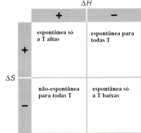

Grandezas extensivas e intensivas: Uma grandeza que esteja associada à massa (extensão) é classificada como extensiva, por exemplo o calor. Uma grandeza intensiva, como a temperatura, não está relacionada com a massa
Adiabático: Não há trocas de calor
Isocórico/Isovolumétrico: Volume constante
Isotérmico: Temperatura constante
Isóbarico: Pressão constante
Entropia: É uma medida da desordem do sistema. Não confundir com entalpia que é uma medida de energia
1ª Lei da Termodinâmica: ΔU = Q + W <=> ΔU = TΔS - pΔV
2ª Lei da Termodinâmica: A entropia do universo tende a aumentar, sendo assim, só ocorrem processos espontâneos se houver aumento de entropia
O estado padrão de uma substância numa dada temperatura é o estado que assume na sua forma pura à pressão de 1 bar (100000 Pa).
A partir do estado padrão é possivél definir propriedades termodinâmicas desse material como entalpia, entropia, energia livre de Gibbs, entre outros.
A lei de Hess diz que a variação de entalpia de reação padrão é a soma das variações de entalpia dos produtos menos as dos reagentes: ΔrHº = ΣΔfHº(produtos) - ΣΔfHº(reagentes)
Outra forma de calcular a entalpia padrão de reação seria através das entalpias de ligação padrão dos produtos menos a dos reagentes.
A energia livre de gibbs é uma função de estado, ou seja, só depende do estado inicial e final do sistema, em que é dada por: G = H - TS; obtem-se também ΔG = ΔH - TΔS.
Sabe-se também que ΔG = -TΔStotal, pelo que, em processos espontâneos, como a entropia tende a aumentar, sabe-se que a energia livre de Gibbs deve diminuir. Sabendo isto é possível prever se processos serão espontâneos ou não:
A energia livre de Gibbs é também a grandeza que é minimizada ao obter o equilíbrio químico, em que se obtém: ΔGºr = -RTlnK. É assim possível obter a equação de van't Hoff: lnK = -Δr/R *1/T + ΔSºr/R
Em reações químicas pode-se também aplicar a equação: ΔG = Δºr + RTlnQ. Sabe-se então que:
A cinética é a área da química que estuda a velocidade de reações químicas, e os fatores que a influenciam.
A velocidade de uma reação química é variação de um reagente ou produto por intervalo de tempo. A velocidade "instantânea" num ponto é o declive da tangente à curva nesse ponto, ou seja, corresponde à deriva da concentração no tempo: v = -d[R]/dt ou V = d[P]/dt
k é a constante de velocidade de uma reação, e a velocidade de uma reação será dependente da concentração em certo grau (normalmente, 0, 1 ou 2). Quando se escreve a velocidade com reagentes coloca-se o sinal negativo, para que a velocidade seja positiva. É então possível escrever a lei da velocidade:
Ao integrar esta equações obtêm-se as leis de velocidade na forma integrada (para os reagentes usa-se o sinal negativo, mas para os produtos usa-se sinal positivo):
A equação de Arrhenius descreve a constante de velocidade de uma reação em função de diversos outros fatores: k = A e-Ea/RT ou lnk = lnA - Ea/RT, em que k é a constante de velocidade, A é o fator pré-exponential(depende, dentre outros, da área de contato), Ea, R a cosntante dos gases ideais e T a temperatura em Kelvin.
Em reações mais complexas (podem ser divididas em passos elementares), a velocidade da reação é determinada pelo passo determinante da reação, que é aquele mais lento e com maior energia de ativação. Numa reação A->B->C, cujas constantes de velocidade são k1 e k2, podemos escrever as velocidades de reação como:
Pode-se então fazer a aproximação de que se trata de um estado estacionário, em que consideramos que a concentração da forma intermédia, B, não se altera, ou seja d[B]/dt = 0, isto permite-nos concluir que: k1[A] = k2[B] <=> d[C]/dt = k1[A] <=> v = k1[A].
Um catalisador diminui a energia de ativação e altera o mecanismo da reação. Existem três tipos de catálise: homogénea (quando o catalisador forma um sistema monofásico/homogéneo), hererogénea (quando o catalisador forma um sistema polifásico/heterogéneo) e enzimática (atuam enzimas, que formam complexos enzima-substrato com os reagentes).